Bulk Solids Science
Most of food science is devoted to the study of liquids and solids. There is comparatively little time spent in traditional food science courses on another category of materials known as bulk solids. Powders are a kind of bulk solid, and many food processes in a country like Ireland either begin or end with a powder. For a product like infant formula, the process often both begins and ends with a powder.
Understanding how powders work and how their behaviour can be predicted is important. While a range of standard methods for products like dairy powders have been in existence for many years they often give unreliable or unactionable data for more recently-developed powders. This is especially true of solubility tests, for a which a range of dynamic tests have now been developed to characterise the rate of rehydration and the rate-limiting stage of rehydration.
These notes will focus on only two properties of powders - flowability and solubility - complex properties that are affected by a broad range of factors.
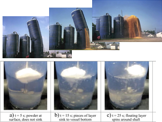
What is a Powder?
A powder is a dispersed system. It consists of two phases, discrete solid particles dispersed in a continuous gas phase. For simple chemicals like sodium chloride this is a sufficient description, but for biological systems like food powders there is often two gas phases.
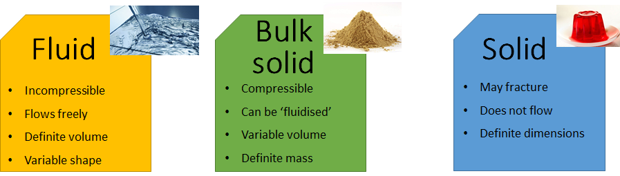
That there are two gas phases has implications for how powders behave. That there is pockets of air between particles means that powders are typically compressible. That there is air within particles means that they tend to float on liquid surfaces for extended periods.
The bulk density of a powder is therefore a function of the relative levels of different molecules of low density (e.g., lipids) and high density (e.g., minerals), in addition to the total volume of each gas phase. As powders are compressible the bulk density can change depending on the pressures (or stresses) they are exposed to, which will be discussed in greater detail later on.
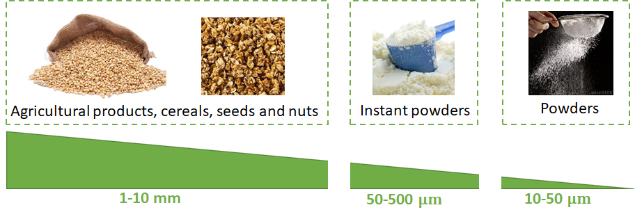
A focus on flowability and solubility
Powders are expected to flow from a variety of vessels: spoons, cups, sachets, cans, hoppers. At the consumer level this can lead to frustration if a powder does not flow as expected, but for the manufacturer it can be disastrous: the failure of a powder to flow can mean reduced process efficiency, the halting of a process line or even the eventual collapse of equipment like silos. Flowability is simply the capacity of the powder to move under an applied stress. Like solids, bulk solids have a critical stress that causes them to yield or “fail” resulting in flow. However, the flow behaviour of powders is pretty unique and requires a different set of tools to understand and study.
In addition, most (though not all) powders are expected to dissolve rapidly and completely. If a powder contains some kind of magic molecule that has some important function (nutrition, sensory, stabilisation) then that function will not be realised unless the powder has dissolved effectively.
One first encounters solubility in chemistry classes, where simple salts (NaCl) and sugars (glucose) are dissolved in water. We are told that there is a well-defined concentration below which a solution will be obtained and above which a supersaturated system prone to crystallisation. Many food powders do not have such neat dividing lines. A powder may be highly soluble, but require tremendous inputs of energy and time to reach that point, often requiring technological intervention.
Particle properties and bulk properties
It is important to distinguish between particle properties and bulk properties. Any powder has two density values, a particle density and a bulk density. More generally, it is often useful to distinguish between three categories of properties for powders:
- Bulk: characteristic of the entire assemblage of particles
- Particle: characteristic of the theoretical average particle
- Surface: characteristic of the total bulk surface
Bulk density is more commonly measured, as it requires less specialist equipment and is in many cases a more useful predictor of powder behaviour. Particle density, which requires gas pycnometry to measure, can be a useful predictor of properties like dustiness and sinkability, but is rarely measured in practice.
Table 1. Non-exhaustive list of methods for measuring particle and bulk properties
| Particle | Method(s) | Bulk | Method(s) | |
|---|---|---|---|---|
| Size | Sieving | Bulk density | Volumeter | |
| Scattering | Flowability | Repose | ||
| Shape | Microscopy | Shear cell | ||
| Fractal analysis | Rehydration | Static | ||
| Density | Pycnometry | Dynamic |
Some important bulk properties
Bulk Density
The bulk density (\(\rho_b = \frac{Bulk \ mass}{Bulk \ volume}\)) is a dynamic property, which tends to change depending on time and stress. It is common to see single values for bulk density reported, but it is important to remember that each powder has - essentially - a bulk density graph.
A powder exerts a self-weight on itself. This means that the stresses created within the powder can result in time-consolidation, and when the powder becomes compressed its bulk density will increase. The mechanism involves some combination of particle reorientation and the void-filling action of small particles, which is the subject of continued work in the literature.
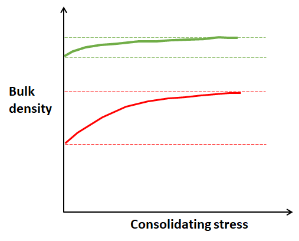
The test for measuring bulk density is common, inexpensive and simple. A known mass of powder is filled into a graduated cylinder, which is then tapped a specific amount of times. The difference in volume between consecutive tappings gives an indication of the compressibility. Changes in bulk density during the course of a food process can also be used to probe the origins of quality defects. For example, an agglomerated powder may have an altered bulk density or compressibility owing to particle breakage occurring during pneumatic conveying - by measuring these properties before and after conveying the root-cause of this issue can be identified.
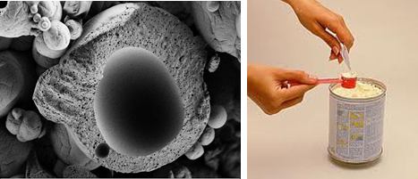
Flowability
The flowability of a powder consists of a complex set of properties that determine the relative ease with which it can be stored in vessels and moved between vessels. Any of the following might be considered problems caused by poor flowability:
- The formation of a stable arch at the outlet of a hopper that prevents flow
- The development of stagnant regions of powder at the inner walls of a silo
- The tendency of a powder to suddenly “flood” or avalanche when poured
- The onset of stickiness in a powder during storage
- The segregation of powders (particularly power mixtures) based on particle size or density
Each of these problems in their own right has an extensive scientific and engineering literature that covers their various intricacies. It won’t be possible to cover all of these issues here, so later we will try to drive towards some of the major recurrent concepts and issues.
Some important particle properties
Particle shape
Taken broadly, food powders have an enormous variety of particle shapes. While milk powders and protein concentrates contain approximately spherical particles, herbs and spices contain a variety of shapes ranging from fibres to stars. Salt crystals are cubic, and so on.
To an extent, the shape is determined by the processor. For example, the shape of a milk powder can be controlled during the agglomeration step. The shape formed during manufacture is not fixed, however, and can undergo changes during handling. Critically, with respect to agglomerates, they can become fragmented when colliding with solid surfaces, especially during conveying. The friability of agglomerates is determined by their shape, with compact shapes being more stable than branching, irregular ones.
Given the large size of powder particles (micrometre to millimetre scale) it is relatively cheap for a company to invest in shape characterisation. In most cases a cheap light microscope will suffice. I have had some success using a light microscope and video camera attachment purchased from Amazon, so there is not a huge barrier to entry here. Free software is also available online to process the resultant images and data. More expensive methods of shape characterisation have recently been developed that offer more immediate statistical power. If you are considering one of these options my suggestion would be to try a light microscope first - if you are not using one of these already why would you consider a more expensive and sophisticated option?
Particle size
One of the most commonly measured values for food powders is particle size. A general rule-of-thumb is that powders with larger particle sizes flow better. However, a direct correlation between particle size and flowability has never been demonstrated for a set of powders, indicating that flowability cannot be reduced to this property alone.
In terms of solubility, it is also generally the case that larger particle sizes are associated with more soluble powders, but the cause of the large particle size must be considered. An agglomerated powder is not more soluble by virtue of its large particle diameter, it is more soluble because of the channels created between smaller particles during agglomeration. So we can determined that a powder has been agglomerated by measuring size, which is a predictor of solubility, but a non-agglomerated powder with a large particle size is not necessarily a very soluble powder.
Particle size is also increasingly a method to track the dispersion of particles during rehydration. This is the slowest part of the process for certain powders. If you are working with a powder that is slow to disperse having a reliable method to track the process can be an important first step in solving the problem. Light-scattering equipment like the Malvern Mastersizer are common in QC labs and in the food industry are probably most commonly used for measuring oil droplet size to determine emulsion stability. However, they can also be used for measuring powder particle size before, during and after rehydration. Thus, while a comparatively low-tech option like a sieve stack can adequately measure the particle size of dry powders, light-scattering techniques can be more flexibly applied to a broader range of problems.
Surface composition
The composition of a particle in a non-segregated powder is taken to be equivalent to the bulk composition of the whole powder. We expect that if we take a whey protein isolate it will have a protein content of around 90%, and that each particle will also have this approximate composition.
This is not a guarantee that the surface composition is equivalent to the bulk though. In powders like these, even when there is a high protein content, the surface can be found to be enriched in other molecules, like water and lipids. This is important to remember for at least two reasons:
- The molecules can facilitate particle-particle interactions that cause flow issues
- The presence of hydrophobic materials at the surface can repel water during rehydration
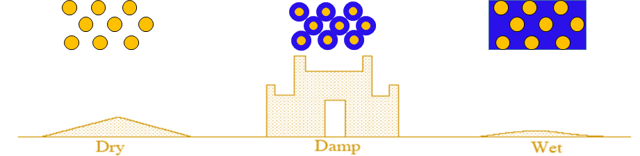
The factors that influence surface composition are numerous. In sugar-rich powders, water sorption by amorphous sugars can lead to crystallisation and the release of water into the bulk. In lipid-rich powders, elevated temperatures during storage or transport have been shown to cause the release of liquid fat on particle surfaces. In both cases, there would be a consequence for flowability and solubility. Methods to measure surface properties have become more common in the literature, especially x-ray photoelectron spectroscopy. If access to such equipment is not possible it is worth keeping in mind that the stickiness issue in your high-protein powder could be a fat issue, and to experiment with solving this problem experimentally, i.e., do fat-targeting surfactants help (?), or does the issue become more pronounced above the melting point of the principal fats in your powder?
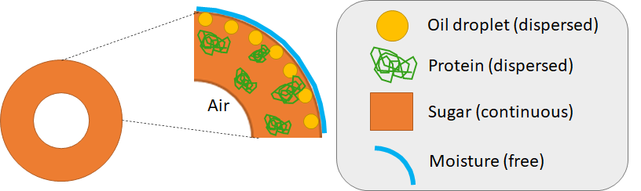
Flow problems
In a powder at rest there are stresses acting vertically and horizontally. Unlike in a liquid, the extent of these stresses is not necessarily equal. The vertical stresses tend to predominate, but occasionally the horizontal stresses can drive materials to the silo walls. The section of a silo where the walls converge is known as the hopper, and in this region some of the vertical stresses can be transferred radially outwards to the hopper walls. This arching effect is similar to architectural arches, which can hold a greater load than a horizontal beam because of the radial stresses in the arch. An arch like this can be very difficult to unblock.
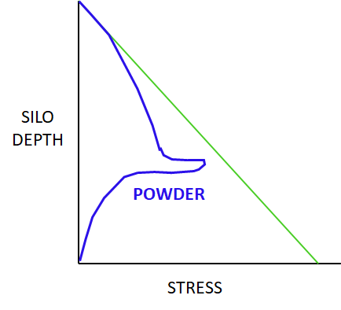
Arching is common in hoppers that are designed for mass flow. These usually have steep walls designed so that the first material that is added to a silo is the first material that leaves it. Hoppers that are not designed this way may exhibit core flow, in which the first material added is the last to be discharged. This results in a large proportion of the internal volume of the silo consisting of stagnant powder. A narrow core in this volume is where the powder flows through. This phenomenon is sometimes called rat-holing.
Both arching and rat-holing are problematic for different reasons. Arching can effectively halt a process. Rat-holing, on the other hand, reduces the effective capacity of the silo and can cause quality deterioration in the stagnant zones. They can technically be resolved by appropriate silo design. Given the dynamic nature of food processing, it may not always be possible to have a perfectly designed hopper for each and every use-case. However, analytical methods including powder flow testers can give data on the propensity of a powder to exhibit these flow problems, which can inform procurement decisions or manufacturing strategies.
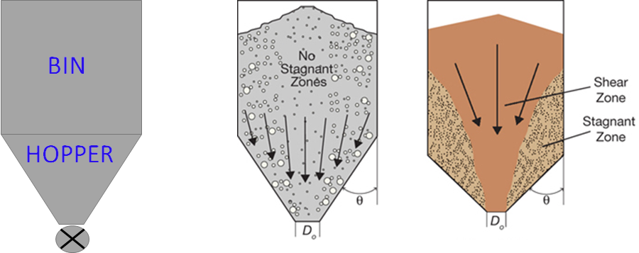
When powders are and aren’t like water
When you dive deep into a body of water the pressure acting on your body increases linearly. This is not true of powders. Strangely, if you keep adding powder to a silo, and continuously weigh the quantity of powder added, a point will be reached where there is apparently no further increase in weight as powder is added. This was recognised many years ago by the German engineer H.A. Janssen, and relates to the fact that some of the weight of the powder is transmitted laterally towards the walls, which - in effect - “hold it up”.
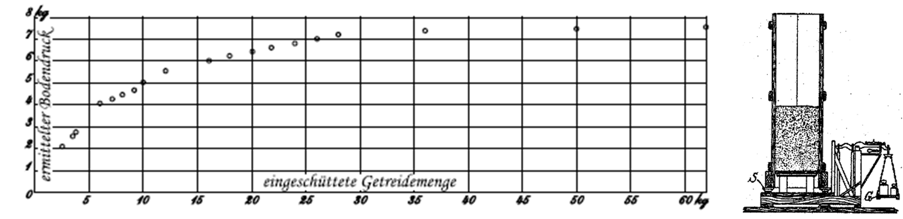
If the powder is divided into discrete chunks or “slices”, similar to a situation where there are stacks of powder in a warehouse or factory floor, then the behaviour is more similar to water. You should keep in mind in these cases that there is a linear increase in compressive stress as the depth increases in this stack. This means that bags positioned toward the bottom of the stack are more likely to undergo negative changes associated with compression.
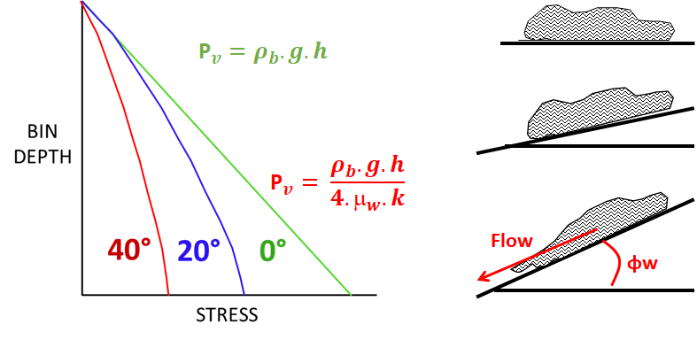
Studying Flowability
There are many basic tests for flowability that despite being relatively inexpensive but are still uncommonly used in practice.
The angle of repose involves allowing a known quantity of powder to flow through a funnel and fall a specific height onto a flat surface. The angle between the top of the pile and the horizontal surface is then measured. The smaller the angle the greater the propensity to flow.
The compressibility can be measured based on data from a standard tapped bulk density test. The degree to which a powder is compressible is taken to be the extent to which the bulk volume (and bulk density by extension) changes during tapping. A powder that is more compressible is more likely to cake during storage and transport.
Other tests like the angle of spatula and the angle of fall are also used on occasion but the reader can investigate these similarly low-tech options themselves, as information on their use is freely available online.
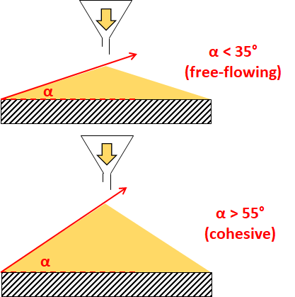
More powerful but expensive are shear cell testers. There is a number of such devices available, including the Jenike tester, the Schulze ring tester, the Brookfield powder flow tester and Freeman Technology’s powder rheometer. All of these devices vary widely in terms of their cost and ease-of-use. The last two options are probably the most accessible option from a routine testing point of view.
These flow testers basically function by applying a vertical stress to a volume of the powder to be tested. This vertical stress is applied until a precise degree of compression is achieved. At this point the powder is subject to shearing forces and the shear required for the powder to “fail” (or flow) is measured. This process is then repeated at multiple compression loads to generate a flow function. The steeper the flow function curve the more cohesive the powder is. the powder is measured prior to the experiment and the device measures the powder volume during testing, meaning that it generates a bulk density curve. The combination of stress and bulk density data allows estimations to be made as to what design requirements might be need for the powder to flow effectively from a hopper. In addition, a special wall friction geometry can be used to determine the degree to which the powder will flow against the stainless steel surfaces found in hoppers and silos.
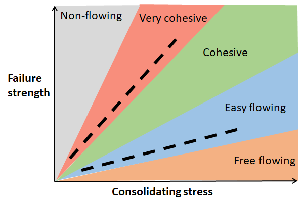
Storage
In both cases it has been recognised that the manufacture and storage of these powders can have a dramatic impact on their subsequent rehydration performance. Generally, it is preferable that powders be stored in such a way that there is limited water absorption from the surrounding air. In addition, low temperature storage of powders promotes a better retention of solubility (and flowability) for that matter.
An interesting case study is an Irish producer of dairy powders for export. After freshly manufacturing a dairy powder it is tested in the lab and found to have excellent rehydration performance. Subsequently, it is exported to its destination in another country and found to have terrible rehydration performance. So what happened? Well, it is likely that en route to its destination it was exposed to temperatures far in excess of the average Irish laboratory. In a truck in a warm country the ambient temperature can easily exceed 50 degrees Celsius, temperatures which are known to cause negative effects on powder solubility. In the absence of a means to ensure refrigerated trucking of the powders, lab functionality tests may need to factor in temperature abuse occurring during transit.
Manufacturing
The intricacies of powder manufacture are such that it is not possible to give a detailed account of a range of powders and the strategies that can be employed to influence rehydration performance. At best, we can focus on some powders that we at UCC have spent some time researching. One such set of powders is Milk Protein Concentrates (MPCs) and related powders (Micellar Casein Concentrates, Milk Protein Isolates). The manufacturing process for an MPC is relatively straightforward:
- Pasteurise milk
- Ultrafilter/diafilter to concentrate protein
- Evaporate to remove water
- Spray dry to generate powder
The underlying causes are still unclear, but somewhere between 2 and 3 a set of physicochemical changes occur that result in these powders being very slow to rehydrate.
What is known is that the during ultrafiltration much of the volume of the suspension becomes occupied with casein micelles, which are pushed close together. In addition, the mineral profile of the suspension is dramatically changed, especially when water is added during diafiltration.
When the suspensions are evaporated the caseins are pushed even closer together. After drying, MPC powders can consist of particles that contain casein micelles fused tightly together at their surface. These kinds of particles are then very slow to disperse. This effect seems to become worse in non-ideal storage conditions (i.e., eleveated temperature).
A non-exhaustive list of strategies to address this problem are categorised below:
- During manufacture:
- Diafilter with mineral solutions: this seems to limit the influence of changes in mineral equilibrium on resultant solubility issues and is the subject of a number of patents
- High-shear treatment pre-drying: this has been shown in some studies to result in less aggregation of micelles during evaporation and dryiung. A variety of tools have been tested, including high pressure homogenisation and ultrasonication
- Agglomeration of the powder: a traditional approach to improving powder solubility. This improves the wetting of MPCs but can worsen their dispersibility, which is a net loss in rehydration capacity.
- After manufacture:
- Dissolution in mineral solutions: this might involve rehydrating the powder in salt solutions, chelator preparations or even milk (if making a high-protein milk). This, of course, may have an impact on composition and nutritional properties. In the case of using chelators, it can fundamentally alter the functionality of the ingredient
- High energy mixing: a common approach, where temperature is elevated to ~50C in combination with rapid agitation. More sophisticated (but expensive) technologies like ultrasonication have also been demonstrated to work in research.
- Choice of lower protein MPCs: most of the issues relating to solubility are encountered when protein content exceeds 75%. When it comes to MPCs there are a variety of them available, ranging from 40% to 90% protein. A question that should be asked when formulating a product using one of these powders is: how high does the protein content need to be in this ingredient for our application? Exceeding 80% protein may required further effort and investment to ensure the powder isn’t creating problems in your product.
Measuring rehydration
A large range of techniques have been developed in recent years to study rehydration dynamically, including particle sizing, conductivity testing and air release measurements. The applicability of these methods to different stages is illustrated graphically below.
In terms of measuring whether a powder has fully solubilised, the standard tests still apply. An effective method is to apply a gentle centrifugation after a period of rehydration. This will separate the insoluble material from the solution. If you have prepared a 10% solids solution then the solids content of the solution after centrifugation should be 10%. This is an easy test, but the key thing to remember is that you must apply the test after the powder has been exposed to relevant rehydration conditions.
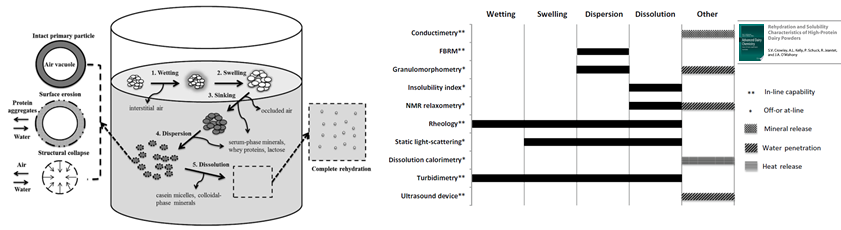
Concluding remarks
Everything discussed here does not override basic principles that apply during the handling of powders.
Mixing vessels should be appropriately designed to maximise mixing efficiency. This means that large vortices should be avoided and agitator geometries selected that are appropriate for a given powder. The installation of baffles can limit the growth of a vortex, promoting turbulence (\(Re = \frac{d^2 \cdot N \cdot \rho}{\mu}\)) and increasing capacity in the process.
In terms of flowability, the impact of hopper design should not be neglected. Poorly flowing powders may need silos to be lined with a low-friction material to ensure effective flow or specialised discharge meters at the outlet. In addition, there is no guarantee that different powders will flow with similar ease in the same hopper. Powder flow testing can identify these problems before they happen.
Links (click to open)
Technical papers from Dietmar Schulze:
www.dietmar-schulze.de/aufsaetze_e.html
Powder flow glossary by Brookfield:
Flowability of milk powders for chocolate manufacture:
https://hal.archives-ouvertes.fr/hal-00895602/document